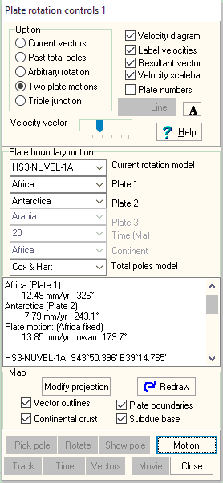

Two Plate Motions--Spreading Rate/Convergence Computations
 Open with Plate rotation button on main
MICRODEM toolbar.
Open with Plate rotation button on main
MICRODEM toolbar.

Pick Current Rotation Model.
Pick the two plates. Plate 1 will be held constant, and the program will compute the motion of plate 2 with respect to it.
Pick Motion Button at bottom of form.
Double click on the map and
- Rates (magnitude and direction) will be displayed in the memo box, along with the fixed plate.
- This will include the motion of each plate in the selected rotation model, and the relative motion between them.
- The map will show the vectors for the two plates, the resultant, or both, depending on the selection options.
- If selected, the velocity diagram will show the velocites of the two plates.